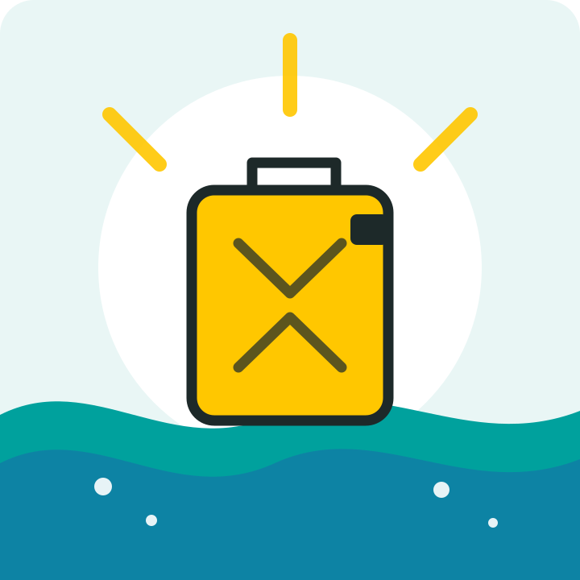

Directly funds water projects
Private donors cover operating costs, so public donations can go directly toward clean-water solutions.
Students for clean water
College students already know how powerful a community can be. Together, we can help bring clean and safe water to people around the world.
Give clean water
Why water?
Reliable access to clean water can support health, education, dignity, and economic opportunity. charity: water works with local partners to fund sustainable water projects, helping communities build stronger futures.
Private donors cover operating costs, so public donations can go directly toward clean-water solutions.
Completed projects are documented with photos and GPS coordinates, giving supporters a clear view of their impact.
One gift, one fundraiser, or one shared message can introduce more people to the global water crisis.
Ready to help?
You do not need to solve the entire water crisis alone. Start with one action and be part of something bigger.
Donate through charity: water